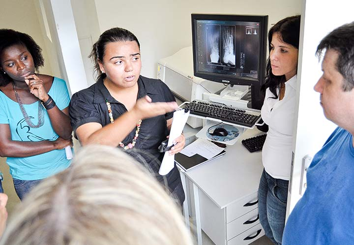

Para o alcance de boas condições de saúde, a partir da perspectiva da LS, faz-se necessário o acesso e apropriação de conhecimentos, desenvolvimento de capacidades e habilidades individuais e coletivas, bem como o fortalecimento da confiança para a tomada de decisão no contexto da saúde.
Módulo 1 | Aula 3 Literacia para a Saúde: concepção e perspectivas para promover saúde
Tópico 2
Compreendendo o termo - Literacia para a Saúde (LS)
De acordo com a Organização Mundial de Saúde (OMS, 1998) a LS pode ser compreendida como o conjunto de competências cognitivas e sociais que determinam a motivação e aptidões individuais, que permitem o acesso, a compreensão e utilização da informação de forma a promover e manter uma boa saúde.
format_quoteLiteracia para a Saúde envolve o conhecimento, motivação e competências das pessoas para acessarem, compreenderem, avaliarem e aplicarem informações sobre saúde com finalidade de fazerem julgamentos e tomarem decisões no dia a dia sobre os cuidados de prevenção de doença e promoção da saúde para manter ou melhorar a qualidade de vida durante o curso da vida. WHO, 2013, p.3
A partir dos anos 2000 ampliaram-se os estudos e pesquisas sobre a LS nos diversos países. Tais investigações têm estabelecido relações com as ações de promoção da saúde, prevenção de doenças, especialmente as doenças crônicas não transmissíveis (DCNT), os comportamentos de risco, o acesso a políticas sociais e serviços de saúde, a comunicação em saúde, a assistência à saúde e a ampliação do acesso e usufruto dos serviços de saúde. (OKAN et al., 2019; SABOGA-NUNES, MARTINS, FARINELLI, JULIÃO, 2019; NUTBEAM, 2000) Clique nas setas e conheça as ações para a LS.
Os níveis de LS podem incidir tanto na saúde de cada pessoa ou da população como também no desenvolvimento psicoemocional, socioeconômico e cultural daquela comunidade. Para tanto, faz-se necessário que ocorra um movimento processual no qual a pessoa busque a informação ou conhecimento ou seja incentivada a buscá-los, para que o indivíduo possa compreendê-la e geri-la conforme sua capacidade e necessidades.
Na mesma direção, ocorre o movimento dos profissionais de saúde com suas expectativas e competências, para realizar a comunicação em saúde, de modo que os usuários dos serviços de saúde e a comunidade possam ter acesso a tais informações, conhecimentos e aos serviços de saúde. Nesse sentido, os profissionais de saúde poderão tanto contribuir para a disponibilização do acesso a informações e à sua compreensão, quanto poderão se apropriar de informações e conhecimentos a partir do vínculo com a comunidade.

Considerando esta contextualização, pode-se identificar o processo pelo qual se estabelece o movimento para ampliação dos níveis de LS da população. Este movimento se estabelece a partir do acesso dos indivíduos, suas famílias e comunidade, à informação ou conhecimentos em saúde, nas diferentes situações e espaços de vida em sociedade, bem como nos diversos serviços de saúde.